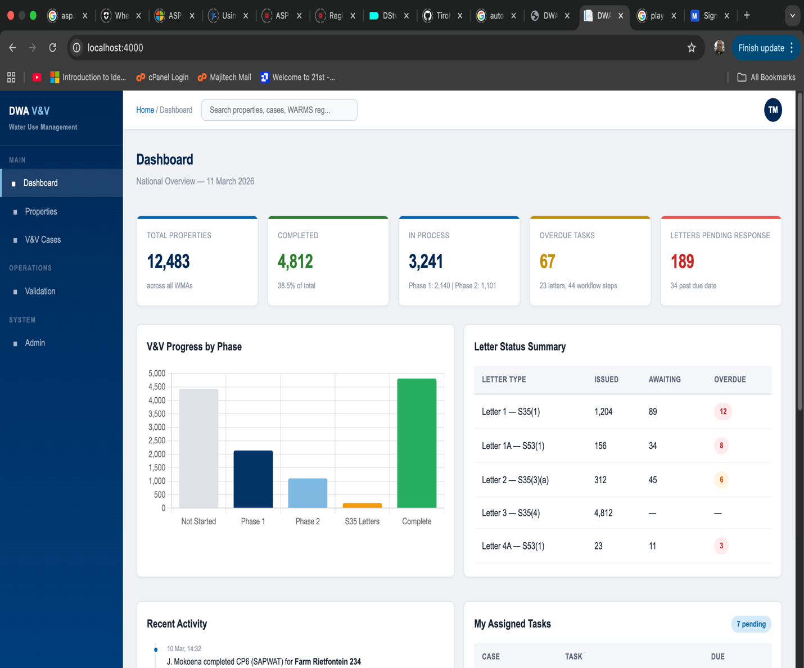
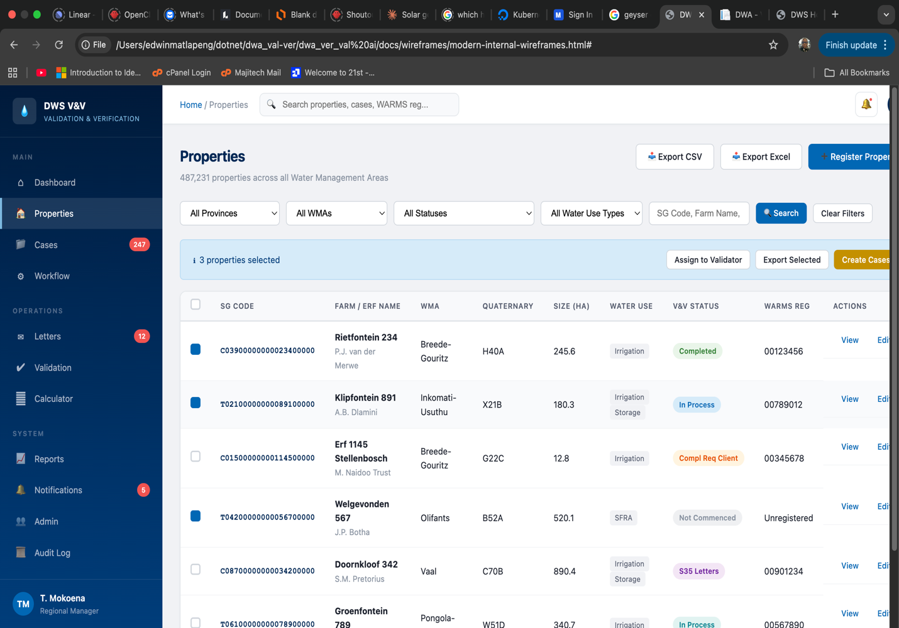
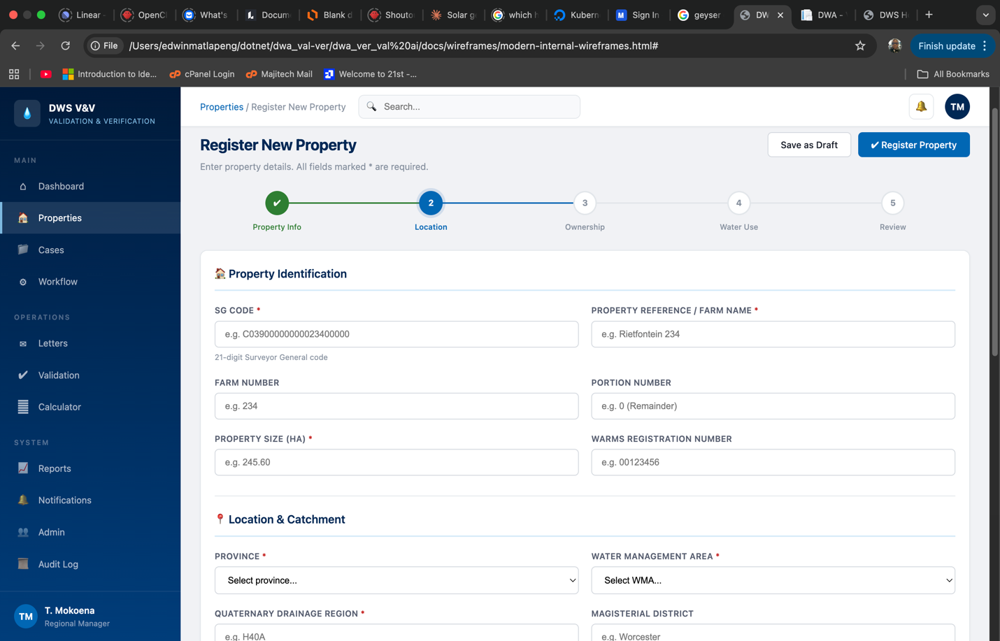
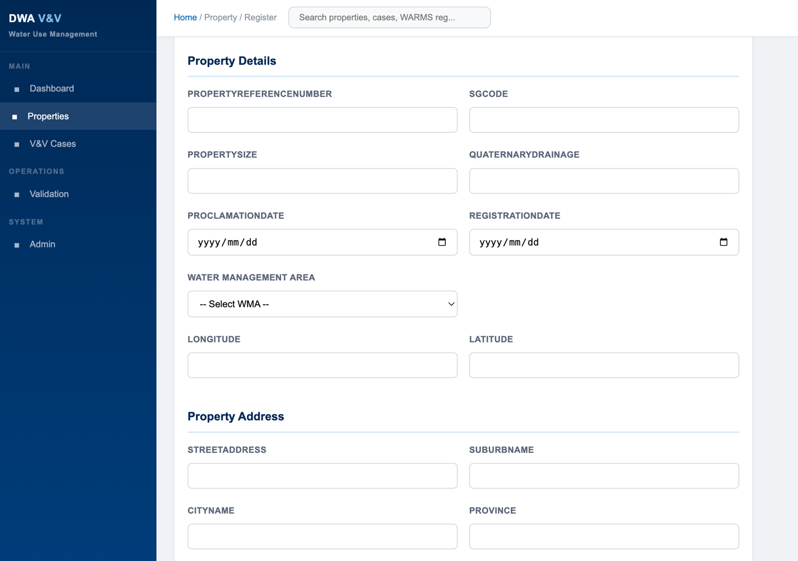
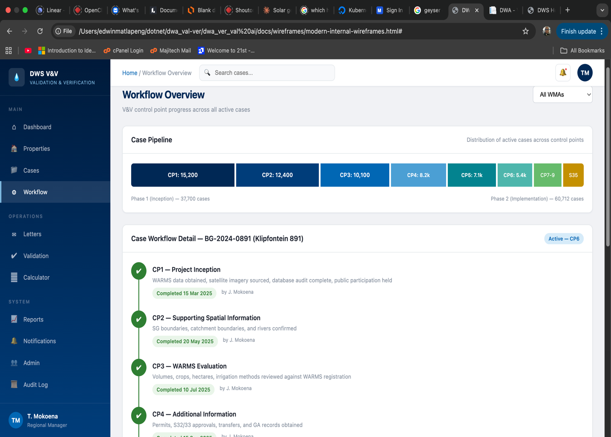
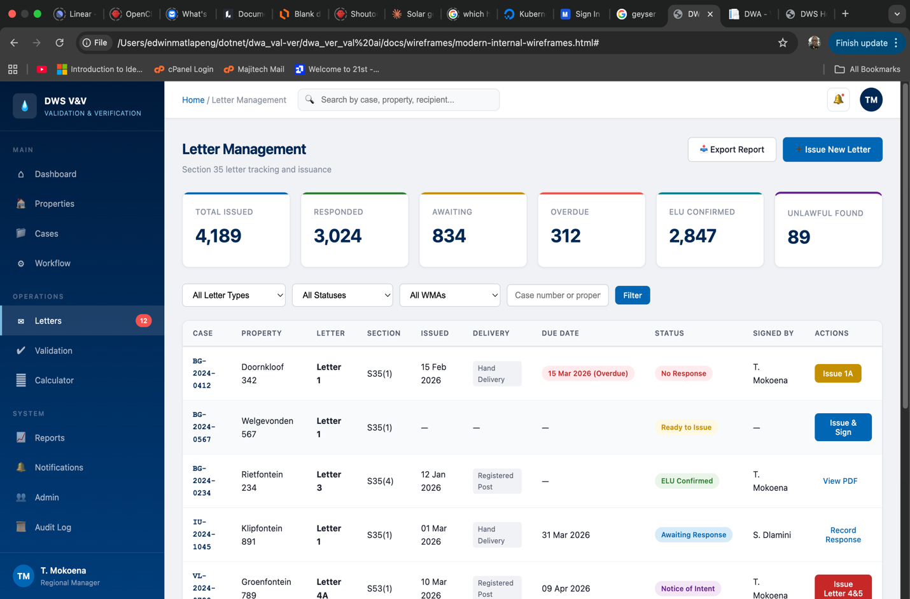
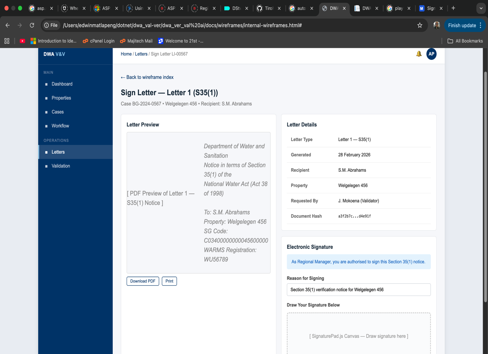

User Interface Design Specification & Visual Language
This document describes the visual design language, interaction patterns, and user interface conventions adopted for the DWA Validation & Verification (V&V) System. It is intended as a companion to the functional requirements specification and the system architecture documentation, giving the client and project stakeholders a clear picture of how the system will look and feel in day-to-day use.
The V&V System is an enterprise-grade information management platform that will be used by approximately 500,000 property records across DWS head office, nine provincial offices, regional offices, and Catchment Management Agencies (CMAs). The user base comprises validators, data capturers, regional managers, and national administrators — many of whom work in field conditions with varying levels of technical proficiency. The interface must therefore prioritise clarity, efficiency, and trustworthiness above visual novelty.
The wireframes presented here represent the current MVP (Minimum Viable Product) iteration. They are working designs that will be refined through client feedback sessions. There are in excess of 100 screens planned across the internal staff portal and the external water-user portal; this document samples the most representative screens to illustrate the overall design direction.
Five principles guide every design decision in the V&V System:
The system serves a regulatory function under the National Water Act. The visual tone must convey authority, reliability, and impartiality. We avoid trendy consumer-facing aesthetics and instead adopt a professional, restrained palette drawn directly from the Department of Water and Sanitation's official brand identity.
Validators work with large data sets — property records, WARMS registrations, crop calculations, dam volumes, and legal correspondence. The interface uses compact data tables with clear column headers, inline status badges, and contextual filters so that users can scan hundreds of records without losing orientation.
The V&V process follows a defined sequence of nine control points. The interface surfaces workflow state prominently on every relevant screen, with a visual stepper that shows completed, in-progress, and upcoming steps. Users should always know where a case stands and what needs to happen next.
Different users see different capabilities. A data capturer sees input forms; a regional manager sees approval queues and signature panels; a national manager sees aggregate dashboards and cross-provincial reports. The interface adapts to the user's role, hiding actions they cannot perform rather than showing disabled controls.
The system must be usable by staff with varying levels of digital literacy and across different hardware — from high-resolution desktop monitors in Pretoria to standard laptops in regional offices. All colour choices meet WCAG 2.1 AA contrast requirements. Form labels are explicit, and error messages are descriptive.
The colour palette is derived from the official Department of Water and Sanitation (DWS) website and brand guidelines. No generic framework default colours are used. Every colour in the system maps to either the DWS corporate identity or to standard semantic conventions (green for success, amber for warning, red for error).
The primary palette anchors the navigation, headers, and key interactive elements. DWS Navy provides the authoritative foundation colour, while DWS Blue and Sky provide visual hierarchy and interactive affordance.
Accent colours communicate status and category. Teal is used for operations and workflow elements, green for completed/success states, gold for warnings and pending items, and red for errors and urgent actions. These colours are applied consistently across badges, progress indicators, and notification elements.
The application background uses a soft neutral (#f0f2f5) that reduces eye strain during extended work sessions. Cards and panels sit on white (#ffffff) with subtle shadows to create visual layering without harsh borders. Text uses a near-black (#1a1f2b) for primary content, with secondary (#555d6e) and muted (#8892a0) tones for supporting information.
The application uses a fixed sidebar-plus-topbar shell pattern — a layout proven in enterprise and government systems for its stability, scalability, and ease of orientation. The sidebar remains visible at all times, giving the user a persistent sense of where they are in the application.
The left sidebar uses a gradient from deep navy (#001a3a) at the top to a lighter navy (#003d7a) at the bottom, providing visual depth while staying firmly within the DWS brand. Navigation items are grouped into three sections:
The active page is highlighted with a left accent bar in DWS Sky (#7db8e0) and a slightly lighter background, providing clear visual feedback. At the bottom of the sidebar, the logged-in user's name and role are displayed, giving immediate context about who is operating the system and at what privilege level.
The top bar serves three functions: breadcrumb navigation (showing the current location as Home / Controller / Action), a global search field, and a user avatar/profile link. The breadcrumb trail ensures that users always have a clear path back to higher-level views, while the global search allows quick lookup of properties, cases, or WARMS registration numbers from any page.
The Dashboard is the landing page for all internal users. It provides a high-level operational overview of the V&V programme, aggregating key metrics across the user's organisational scope (national, provincial, or regional, depending on role). The goal is to answer the question: "What is the current state of V&V across my area of responsibility?"

The top row presents six key performance indicators in card format: total properties, properties in V&V, in-progress cases, completed cases, overdue tasks, and active letters. Each card shows the headline number in large type with a supporting descriptor below. The cards use colour-coded left borders — blue for informational metrics, green for completed work, gold for pending items, and red for overdue or attention-required counts. This allows a manager to assess programme health at a glance without reading a single label.
A bar chart breaks down case counts by workflow phase (Not Started, Phase 1, Phase 2, and Section 35 Completion). This chart directly maps to the control point structure defined in the DWS requirements document, giving management visibility into bottlenecks. If, for example, a large number of cases are stalled at Phase 2 while Phase 1 completion is high, it signals a resource constraint in field verification.
A tabular summary shows the count of each Section 35 letter type (Letter 1 through Letter 5), broken down by status: issued, awaiting response, and overdue. Letters are the primary regulatory instrument in the V&V process, and overdue responses require escalation. The red "Overdue" badges draw immediate attention to cases that need follow-up action.
Two panels at the bottom of the dashboard provide personal context. "Recent Activity" shows the latest actions taken across the user's cases (e.g., "Validator completed CP6 for Farm Rietkuil 234"). "My Assigned Tasks" lists outstanding work items with due dates, allowing the user to prioritise their day directly from the dashboard.
The Properties List is the primary data management screen. With approximately 500,000 property records anticipated across the national programme, this screen must handle large data volumes without overwhelming the user. It is the entry point for all property-related operations: viewing details, creating V&V cases, assigning validators, and exporting data.

Above the data table, a row of filter controls allows users to narrow the displayed properties by Water Management Area (WMA), province, validation status, water use type, and free-text search on SG Code or farm name. Filters can be combined — for example, a regional manager might filter to "Limpopo" + "In Process" to see only active cases in their province. The active filter count is displayed so users know when filters are applied and can clear them quickly.
The table displays key property attributes in a dense but readable format: SG Code, farm name, WMA, quaternary drainage region, property size (hectares), validation status, and registration status. Columns are sortable by clicking the header. Each row uses a colour-coded status badge:
Checkboxes on each row allow multi-select for batch operations: assigning a validator to multiple properties, exporting selected records to CSV/Excel, or bulk-updating a status field. This is essential for programme managers who need to assign 50+ properties to a consultant in a single action rather than editing each record individually. The "Export CSV" and "Export Excel" buttons in the top-right corner export the current filtered view, not the entire dataset, ensuring exports are relevant and manageable.
The prominent "Register Property" button in the top-right corner provides a single entry point for adding new properties to the system. This action is role-restricted to Validator and above.
The Property Registration screen is a multi-step guided form that walks the user through capturing all required data for a new property record. Rather than presenting a single overwhelming form with 30+ fields, the process is divided into five logical steps presented as a horizontal stepper: (1) Property Info, (2) Location, (3) Ownership, (4) Water Use, and (5) Review. This mirrors the physical process of gathering property data from title deeds, SG diagrams, and WARMS records.

The horizontal stepper at the top of the form shows all five steps with the current step highlighted in DWS Blue and completed steps marked with a green tick. This gives the user a clear sense of progress and what remains. Users can click on a completed step to return to it and make corrections before final submission. The stepper uses a numbered circle design that is intuitive regardless of screen size.
The first section captures the core identifiers that link the property to external systems: SG Code (the 21-digit Surveyor General code, e.g., C03900000000234000000), Property Reference / Farm Name, Farm Number, Portion Number, and Property Size in hectares. The WARMS Registration Number field provides the link to the national water registration system. Each field includes a helper text below the input (e.g., "21-digit Surveyor General code") to guide users who may not be familiar with the expected format.
The second section captures the geographic and hydrological context: Province (dropdown of 9 provinces), Water Management Area (dropdown filtered by province), Quaternary Drainage Region, and Magisterial District. These fields determine the organisational unit responsible for the V&V case and the applicable water resource context. The WMA dropdown is a critical field — it drives the assignment of the case to the correct regional office.
Users can save a partially completed registration as a draft at any point. This is important because field workers may begin registration with available information (e.g., from a site visit) and return later with additional data (e.g., from the Deeds Office). The "Save as Draft" button is always visible alongside the primary "Register Property" button, which is only enabled once all mandatory fields are completed.
The Property Details screen in the current MVP is a focused, form-based view that displays and allows editing of core property data. While the full wireframe designs envision a rich details page with tabbed sections for ownership, water use, and linked cases, the MVP implementation provides the essential data capture functionality that underpins all subsequent V&V work.

The upper portion of the screen presents the primary property attributes in a two-column layout that makes efficient use of screen width. Fields include Property Reference Number, SG Code, Property Size (in hectares), Quaternary Drainage code, Proclamation Date, Registration Date, and the Water Management Area dropdown. The geographic coordinates (Longitude and Latitude) enable integration with GIS mapping tools that are central to the V&V process — particularly for digitising crop fields and dam boundaries during Control Points 5 and 6.
Below the property details, the address section captures the physical location: Street Address, Suburb Name, City Name, and Province. This information is used for correspondence (Section 35 letters must be delivered to a physical address) and for organisational filtering (properties are scoped by province and WMA for access control purposes).
Each form section is visually separated by a section heading with a blue underline rule. This convention is used throughout the system to break long forms into scannable groups. The section headers use the DWS Blue colour to maintain brand consistency while providing clear visual hierarchy.
The Workflow Overview screen is the operational heart of the V&V System. It provides both a macro view (how many cases are at each control point across the programme) and a micro view (the detailed step-by-step progression of an individual case). The design directly maps to the nine control points defined in the DWS requirements document, ensuring that the system's visual language aligns with the regulatory process that users are already trained on.

The top section displays the distribution of all active cases across the nine control points as horizontal progress indicators. Each control point shows the count of cases currently at that stage. This pipeline view immediately reveals where cases are concentrating — a critical management tool for identifying resource bottlenecks. For example, if CP6 (Field, Crop & SAPWAT) shows significantly more cases than CP7 (ELU Calculation), it suggests a need for additional SAPWAT modelling capacity.
Below the pipeline, the detail section shows a specific case's journey through all nine control points using a vertical stepper. Each control point displays:
This design ensures that anyone reviewing a case — whether the assigned validator, a regional manager conducting quality assurance, or a national manager reviewing programme progress — can immediately understand the case's history and current position without navigating through multiple screens.
The workflow engine enforces business rules (transition guards) at each control point. If a user attempts to advance a case to the next control point without satisfying all prerequisites, the system displays a clear message listing the outstanding requirements. For example, advancing from CP5 to CP6 requires that satellite imagery GIS layers have been confirmed — if they haven't, the user sees: "Cannot advance: GIS analysis layers not confirmed for qualifying and current periods."
Letter management is one of the most critical operational screens in the system. The Section 35 letter process is the legal mechanism by which DWS communicates with water users about their validation status, requests additional information, confirms existing lawful use, or directs cessation of unlawful use. Each letter type has statutory requirements for delivery method, response periods, and escalation paths.

The top row displays aggregate counts: total letters issued, pending responses, overdue responses, responses received, and letters requiring escalation. These cards use the same colour-coding convention as the Dashboard — green for received, gold for pending, red for overdue. A regional manager can open this screen and immediately know how many of their letters require follow-up action.
The data table lists individual letters with key tracking fields: case number, property reference, letter type (Letter 1 through Letter 5), issue date, due date, delivery method, status, and the response received date. Filters allow narrowing by letter type, province, status, and date range. The "No Response" badge in red highlights letters where the statutory response period has elapsed without acknowledgement — these cases may require escalation to the next letter in the Section 35 sequence (e.g., from Letter 1 to Letter 1A).
The "Issue New Letter" button initiates the letter generation workflow, which includes selecting the letter type, confirming the recipient details, generating the PDF from the QuestPDF template, and routing it for signature by the authorised regional manager. Letter 1 has a special requirement — it must be served in person — so the system prompts for the serving official's details and records the hand-delivery confirmation.
The Letter Signing screen is where the authorised signatory (typically a Regional Manager or delegated official) reviews and electronically signs a Section 35 letter before it is issued to the water user. This screen combines a document preview with signature capture, ensuring that the signatory has reviewed the content before applying their signature.

The left panel displays a rendered preview of the letter as it will appear when printed or delivered as a PDF. The preview shows the DWS letterhead, the statutory references (e.g., "Notice in terms of Section 35(1) of the National Water Act"), the recipient details, property identification, and the body text. The signatory can review the full content, download the PDF for offline review, or print a hard copy if required.
The right panel summarises the letter metadata: letter type and statutory reference, issue date, the property and case it relates to, the requesting validator, and the delivery method (registered post, hand delivery, or electronic). This gives the signatory the context they need to confirm that the letter is correct, addressed to the right person, and relates to the right property.
Below the letter details, the signature panel allows the authorised official to capture their electronic signature. The system uses a signature pad interface (powered by SignaturePad.js) where the user draws their signature with a mouse or stylus. Before signing, they must confirm the reason for signing (a dropdown selecting their authorisation basis) and enter their name. The captured signature is embedded into the PDF and the signing event is recorded in the immutable audit trail with a timestamp and the signatory's user ID.
The system uses Segoe UI as the primary typeface, falling back to the system UI font. Segoe UI is the standard typeface for South African government digital systems, is pre-installed on all Windows machines (the dominant OS in DWS offices), and provides excellent readability at both large heading sizes and small data-table body text.
| Element | Size | Weight | Colour |
|---|---|---|---|
| Page heading (h1) | 20pt | 700 (Bold) | Navy #002855 |
| Section heading (h2) | 15pt | 600 (Semi-bold) | Navy #002855 |
| Sub-heading (h3) | 12pt | 600 | Blue #0066b3 |
| Body text | 11pt / 14px | 400 (Regular) | Primary #1a1f2b |
| Secondary text | 10pt / 13px | 400 | Secondary #555d6e |
| Table data | 10pt / 13px | 400 | Primary #1a1f2b |
| Badge / label | 9pt / 11px | 600 | White on coloured background |
| Caption / helper text | 9pt / 11px | 400 | Muted #8892a0 |
Spacing follows a 4px base unit: 4, 8, 12, 16, 24, 32, 48. Cards use 16px internal padding, sections are separated by 24px margins, and page-level content has 32px padding from the sidebar and topbar edges. This consistent spacing creates a rhythmic, uncluttered layout even on data-heavy screens.
| Component | Description | Usage |
|---|---|---|
| Status Badge | Small rounded pill with coloured background and white text | Validation status, letter status, workflow state |
| Summary Card | White card with left colour border, large number, and descriptor | Dashboard KPIs, letter statistics, case counts |
| Data Table | Striped rows, sortable headers, inline badges, checkbox select | Properties list, letter list, case list |
| Step Indicator | Horizontal or vertical numbered circles connected by lines | Multi-step forms, workflow control points |
| Filter Bar | Row of dropdowns and search inputs above a data table | Properties list, letter management, reports |
| Action Button (Primary) | Filled button in DWS Blue with white text, 6px border radius | Register, Submit, Issue Letter, Sign |
| Action Button (Secondary) | Outlined button with DWS Blue border and text | Cancel, Save as Draft, Export |
| Breadcrumb | Slash-separated path in the top bar | All pages — shows navigation hierarchy |
While the V&V System is primarily a desktop application used in office environments, the interface is designed to adapt to varying screen sizes:
| Breakpoint | Behaviour |
|---|---|
| Large (>1280px) | Full sidebar (260px) + content area. Two-column form layouts. Data tables show all columns. |
| Medium (768px–1280px) | Sidebar collapses to icon-only mode (60px). Forms remain two-column. Some table columns hidden behind a "more" toggle. |
| Small (<768px) | Sidebar becomes a hamburger-triggered overlay. Forms switch to single-column stacked layout. Tables become card-based lists. |
Field workers conducting site visits may access the system from tablets. The medium breakpoint ensures that property registration and data capture forms remain functional on 10-inch tablet screens. Full data analysis and reporting workflows are optimised for desktop use.
The V&V System targets WCAG 2.1 Level AA compliance across all screens. Key measures include:
<label> element (not placeholder-only labelling). Error messages reference the field name and describe the required correction.<nav>, <main>), and ARIA attributes where native semantics are insufficient.aria-label text (e.g., "Status: In Process") so that colour-coded information is also conveyed textually.This document represents the MVP visual baseline. The following areas will be developed and documented in subsequent iterations: